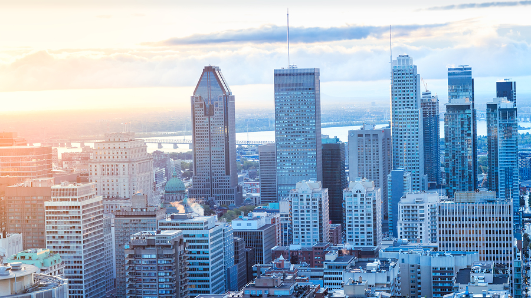
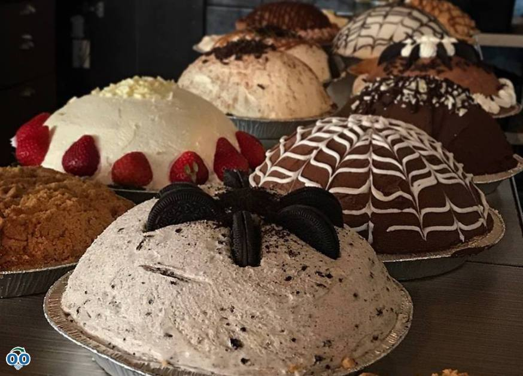

Présentation de la ville
Montréal a été fondée en 1642 par Paul de Chomedey de Maisonneuve et Jeanne Mance. C’est la plus grande ville de la province du Québec au Canada. Elle constitue un centre majeure de commerce de l’industrie, de la culture, de la finance et des affaires internationales. Dans la ville de Montréal, environ 52,4% de la population de la ville est francophone, environ 32,4% sont allophones, tandis que 12,5% sont anglophones, faisant de Montréal une ville interculturelle.
Visiter Montréal

Le meilleur choix pour commencer la visite de Montréal est le Plateau Mont Royal. Ce lieu est très réputé et surtout très apprécié des Français, qu’ils soient touristes ou expatriés. Ce quartier est très vivant avec ses nombreux commerces, restaurants, bars, friperies et surtout réputé pour ses belles maisons.

Situé entre le fleuve Saint Laurent et les gratte-ciel du centre ville, il y a le quartier du vieux Montréal et le quartier historique de Montréal.

Il y a aussi le stade olympique construit pour les jeux olympiques de 1976 qui est devenu un des symboles de la ville. Avec ses 75 hectares regroupant plus de 20 000 espèces de végétaux, c’est l’un des jardins botaniques les plus importants du monde.
Manger et boire à Montréal
À Montréal, vous pouvez devant un rockaberry, impossible de ne pas passer devant la vitrine remplie de cheesecakes et de tartes toutes plus appétissantes les une que les autres. Le rockaberry propose aussi des menus à la base de sandwichs et salades qui sont très bons.

Appréciée par certains, détestée par d’autres, à vous de vous faire votre avis sur la Poutine qui est un plat emblématique du Québec. Elle est composée de trois ingrédients: des frites, de la sauce brune et des << crottes de fromage >>.
À faire autour de Montréal
Une saison si spéciale qui le caractérise: l’automne et ses couleurs flamboyantes. Si vous souhaitez admirer par vous même ce décor si particulier, nous vous conseillons de vous rendre au Mont Tremblant situé à 1h de Montréal.

Il y a aussi le cap de saint Jacques qui est le plus grand parc de la région de Montréal. Vous pourrez profiter de longues balades au calme dans ce site composé principalement d’érabilière et situé au bord d’un lac et d’une rivière offrant de multiples point de vue. Ce parc est ouvert toute l’année et le stationnement est payant.